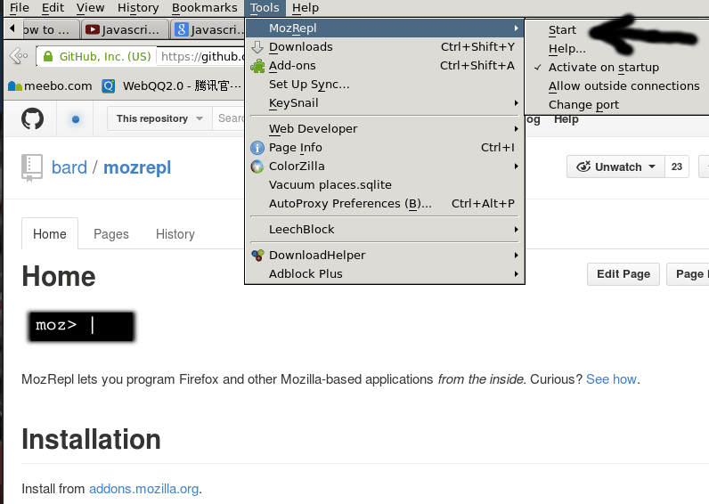
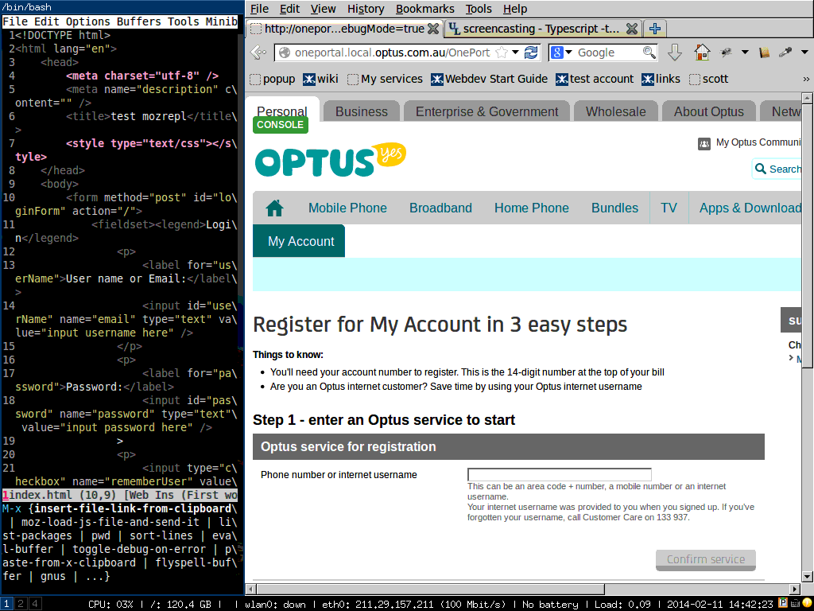

How to do HTML/Javascript REPL (Read–eval–print loop) with NO server set up
Problem
I love the REPL (Read–eval–print loop). Watch live update of web page when typing code is cool.
But most solutions around the internet are not practical for me.
In my world, I never has a chance to develop fancy 2D/3D games written in HTML5 canvas.
Instead, I was ALWAYS assigned to maintain some enterprise CMS with complex business logic. For example, after refreshing the web page I need click lots of buttons before doing the job. Avoiding press "refresh page button" does not help much.
Besides, I can't use the embedded server those solutions boasted because our web application has many dependencies. It needs a whole environment support team to set it up. There is no way I can persuade the team to use a different web server
For me, a practical solution must be:
- easy to set up
- powerful. I can read/write any part of the web page in my text editor
- no learning curve. I don't want to learn any domain specific language or API. For example, if my web application uses jquery, I want use and only use jquery API to manipulate web page in my text editor. If it use backbone, then I use backbone. No more, no less.
Solution
The best solution is firefox addon MozRepl. You can install it https://addons.mozilla.org. Click firefox menu "Tools => MozRepl => Start" to run it. 
So what is MozRepl, as its web site says, "MozRepl lets you program Firefox and other Mozilla-based applications from the inside." Basically it convert firefox into a socket server. Your text editor could talk to firefox and let firefox do anything you want. Since it only interact with the firefox, I don't need mess with the web server.
Well, I hope I can end this article by claiming "after reading its official tutorial,I live happily with MozRepl ever after".
The ugly truth is, MozRepl has some rough edges. That's the reason why I write this article. I will explain how to use MozRepl in next two sections.
Section 1 is about how to use MozRepl, whatever text editor you use, you should read this section.
Section 2 is on how to set up my text editor Emacs to interact with MozRepl. It's optional.
Section 1, use MozRepl
Here are key points:
- You need read above official tutorial at least once
- There is video demo on youtube. I suggest watching from 2:18 because you possibly are more interested in manipulating web page than toy with firefox internals.
- web page is called "content" in MozRepl
- In order to execute your javascript code with exactly same syntax as your web application is running code "repl.enter(content);" at first line, as you can see in both video and text tutorial
- Use firefox 24.0+ and MozRepl 1.1.2+
- For some weird reason, MozRepl socket server needs some warm up after web page refreshed. So run the code like "console.log('hello');" in the first connection, close the connection, and run your other code in second connection.
- For code running in MozRepl, if one line will trigger some AJAX request, all the code just after that line will not be executed. Use javascript API "setTimeout' to work around this issue.
Here is a complete example (note how I use setTimeout) written in javascript,
$('#serviceId').val('0451235550');
$('#serviceId').keyup();
console.log('hi');
setTimeout(function(){
console.log('world');
$('input[value="1"][name="isAccountHolder"]').click();
$('#accountNumber').val('01234567891234');
setTimeout(function(){
$('#registrationLoginEmailAddress').val('cb@cb.cb');
$('#registrationLoginEmailAddress2').val('cb@cb.cb');
$('#password').val('Password1');
$('#passwordConfirm').val('Password1');
$('#title').val('Mr');
$('#serviceFirstName').val('chen');
$('#serviceLastName').val('bin');
$('#registrationLoginDetailsContinueBtn').click();
},2000);
$('#serviceAccountContinueBtn').click();
},3000);
$('#confirmServiceBtn').click();
As you can see from above, I can use jQuery API loaded in that web page without any problem. Of course, you can always use vanilla javascript instead.
Please note the code is not part of my web application! It will be run only in MozRepl. You can telnet to the MozRepl socket server (127.0.0.1 with port 4424) and copy paste above code line by line.
Section 2, set up text editor (Emacs)
My text editor is Emacs, so I use Emacs as an example.
Step 1, install moz.el according to official manual.
Step 2, Please insert below code into your ~/.emacs:
(defun moz-goto-content-and-run-cmd (cmd)
(comint-send-string (inferior-moz-process)
(concat "repl.enter(content);"
cmd
"repl.back();")))
(setq moz-repl-js-dir (expand-file-name "~/moz-repl-js-dir"))
(defun moz--read-file (js-file)
(with-temp-buffer
(insert-file-contents js-file)
(buffer-string)))
(defun moz--load-js-file (js-file)
(let (cmd )
(when (file-exists-p js-file)
;; make moz API usable in any major-mode
(moz-minor-mode 1)
;; flush mozrepl at first
(moz-goto-content-and-run-cmd "console.log('hello');")
;; read the content of js-file
(setq cmd (moz--read-file js-file))
(moz-goto-content-and-run-cmd cmd))))
(defun moz-load-js-file-and-send-it ()
"load js file from specific directory and send it to mozrepl"
(interactive)
(let ((js-file (read-file-name "js file:" moz-repl-js-dir)))
(moz--load-js-file js-file)
))
From now on, you only need "M-x moz-load-js-file-and-send-it" and select the js file you need MozRepl to run.
Tips
Tip 1
Well, this is a simple tip. Maybe you are already aware of this.
You can write a all-in-one.js. In all-in-one.js, you can parse the URL to separate logic for different project.
Here is javascript code,
var url=document.URL;
if(/^.*mycompany\.com\.au.*my-account\/registration/.test(url)){
console.log("for regitration module");
} else if (/^.*mycompany\.com\.au.*my-account\/my-profile/.test(url)) {
console.log("for profile module");
}
Since javascript is good at analyzing URL, you can also tweak the URL parameters. Anyway, the full power of javascript is at your hand.
Tip 2
Sometimes mozrepl will be unresponsive. You can test it by running "M-x moz-reload-browser" to refresh the page. If page is not refreshed, restart Firefox. Luckily this does not happen too often.
(defun moz-reload-browser ()
(interactive)
(comint-send-string (inferior-moz-process)
"setTimeout(function(){content.document.location.reload(true);}, '500');"))
Demo
Here is a demo how I use it in a real world web application development.
The script to drive the firefox is written in simple javascript/jquery code, which I already show you.
